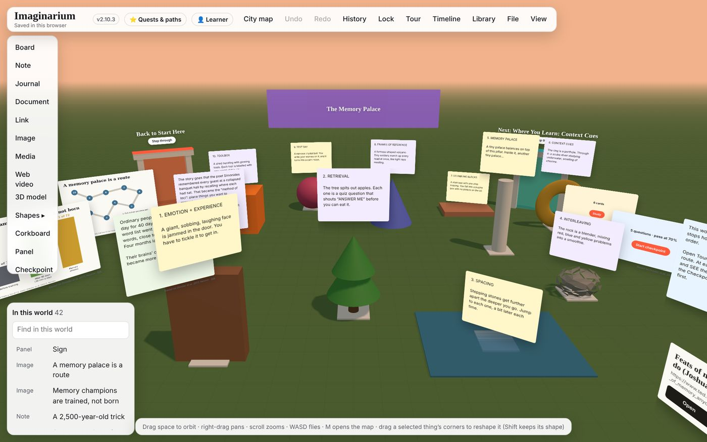
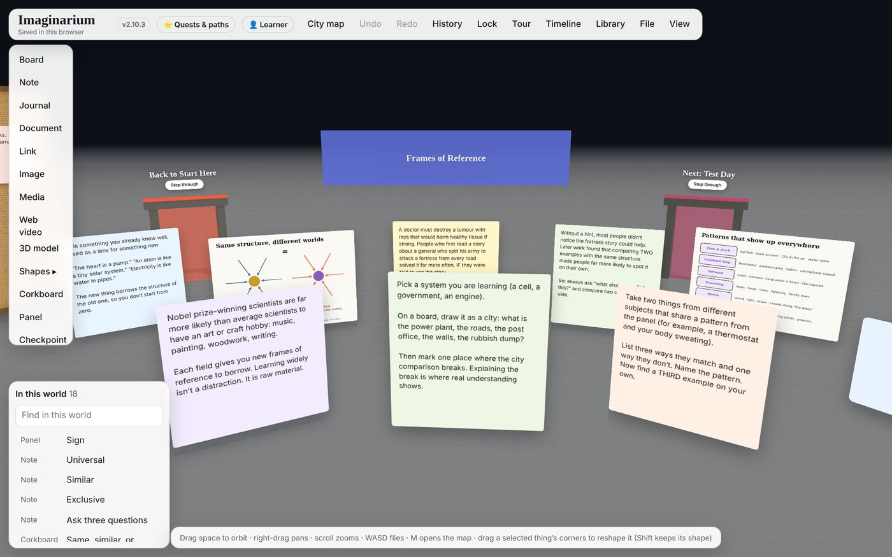
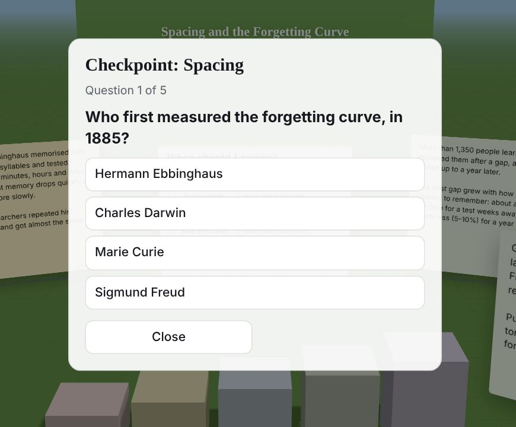
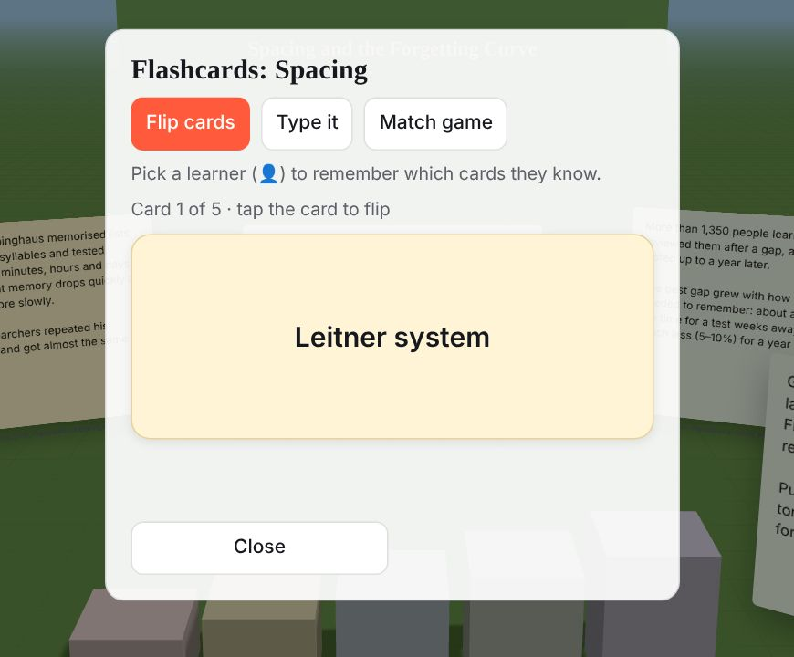
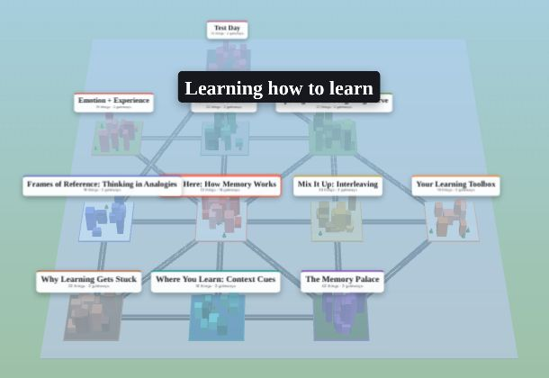
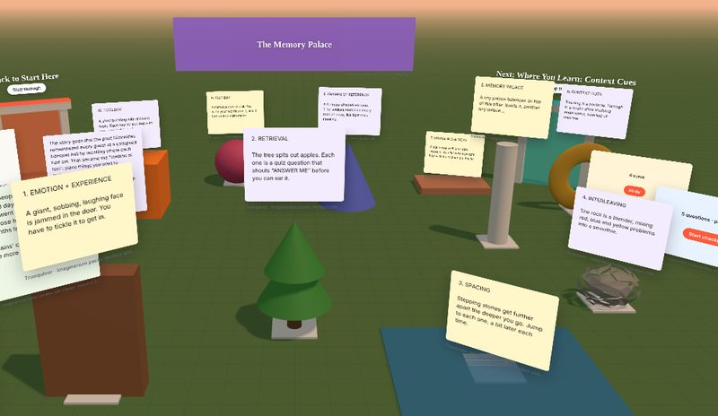

Imaginarium turns each topic into a place you can walk through: worlds full of notes, pictures, models and videos, joined by gateways, with tours to present them and Checkpoints to learn from them.

Your memory is built for places. Imaginarium uses that: you remember where something was, so you remember what it was.
One city per topic: Biology, a business plan, your home projects.
Each city has worlds, shown as districts on the city map. Double-click one to step inside.
Arches that lead from one world to another and draw roads between them on the map.
Save camera stops with captions, then Present: the arrow keys fly you from stop to stop.
Paste or drag files straight in. Move, turn, tilt and reshape everything in 3D.

Every world can carry its own Checkpoints and Flashcards, and Imaginarium keeps track of each learner.


The Windows app works with no connection and saves as you go. Built for classrooms and places where the internet is patchy.

Packs are whole cities you can try in your browser, then add to your own Imaginarium with File ▸ Open file.

How memory works and how to study, remember and test well: emotion and experience, retrieval practice, spacing, a walk-through memory palace, thinking in analogies, test day and more.
Scan to share this page with whoever you're talking to.